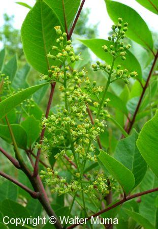

Poison Treatment
- If you know you have contacted Poison Sumac, wash the affected area with soap and water as soon as possible (within a few hours). This usually prevents any effects.
- Washing with Jewelweed juice is also very effective. Just grab some of the plant, and smush it onto the affected area. The stems are the juiciest.
- Black and White Birch leaf or spring growth tea does a fine job of allaying the itch and misery of poison sumac
- Rubbing alcohol is said to help with the rash.
- If a serious allergic reaction is developed, steroids must be administered.
Similar Species
- Staghorn Sumac
- Smooth Sumac
Range Map
More Plant Information
Family
Cashew family
Latin Name
Toxicodendron vernix
Flower Information
Green or Brown, 5 petals.
Native
Native
Status
Uncommon due to it's habitat
{kind=link}
The leaves just starting to come out in the spring. Like other sumacs, it leafs out much later in the spring than many other trees and shrubs.
{kind=link}
A cluster of leaves and developing flowers. Note the sumac-like "hang" of this branch (it comes into the photo from the upper right corner).
{kind=link}

Close-up view of the bark.

{kind=link}
Close-up photo of the flowers starting to bloom.
{kind=link}
{kind=link}